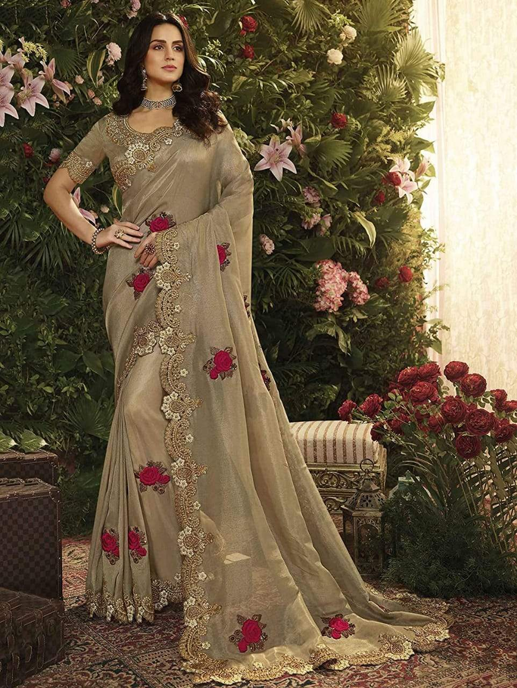
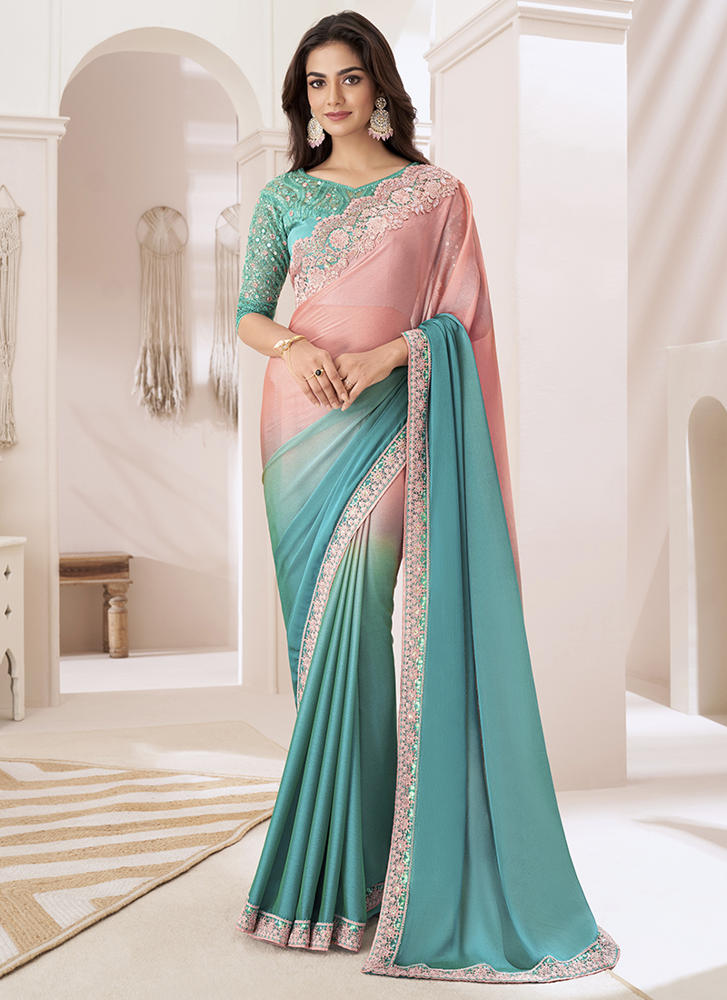
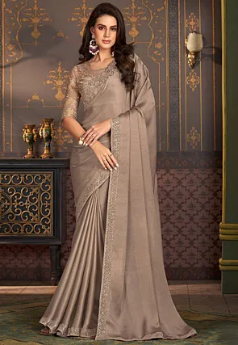

CHIFFON SAREE
- All India




The Chiffon saree is a lightweight and flowy saree, perfect for modern-day wear. Made from silk or synthetic fibres, these sarees are known for their elegant drape and delicate appearance. Chiffon sarees are available in a variety of colors and designs, making them a versatile option for both casual and formal occasions.
Their lightweight nature makes them comfortable to wear, especially in the summer months, and they are a popular choice among Indian women for their effortless style.